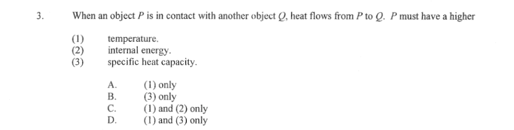

What sets the direction of heat flow
Only one quantity must be larger in the body that gives out heat.

Section 1.2
What temperature means for molecules, what a body stores, and what flows.
Students should be able to:
interpret temperature as a quantity associated with the average kinetic energy due to the random motion of molecules in a system
realise that heat is the energy transferred as a result of the temperature difference between two objects
describe the effect of mass, temperature and state of matter on the internal energy of a system
relate internal energy to the sum of the kinetic energy of random motion and the potential energy of molecules in the system
All matter is made of molecules in constant random motion. The temperature of a body is a measure of the average kinetic energy per molecule of this random motion.
(a) A small cup and a large pot of soup are both at 70 °C. Their molecules have the same average KE.
True. Same temperature means the same average KE per molecule, whatever the amount.
(b) They also have the same total molecular KE.
False. The pot has many more molecules, so the total is larger.
(c) Every molecule in water at 60 °C moves faster than every molecule in water at 20 °C.
False. Only the average is higher. Both bodies have slow and fast molecules.
The internal energy of a body is the sum of the kinetic energy of the random motion and the potential energy (from forces between molecules) of all its molecules. Unit: joule (J).
| Internal energy is larger when | Because |
|---|---|
| the mass is larger | more molecules, each with its own KE and PE |
| the temperature is higher | higher average KE per molecule |
| the state is liquid rather than solid, gas rather than liquid | molecules are further apart, so more PE (energy was absorbed to break bonds) |
A body contains internal energy, not heat. Heat is only the energy on its way in or out.
Which of these has the largest internal energy?
D. Same mass throughout. Water at 100 °C beats water at 0 °C on KE; steam at 100 °C has the same KE as water at 100 °C but much more PE, because a lot of energy was absorbed to separate the molecules. A is lowest: water at 0 °C has the same KE but more PE than ice at 0 °C.
Heat is the energy transferred from one body to another because of a temperature difference. It always flows from the higher temperature to the lower temperature.
Two bodies in contact are in thermal equilibrium when they are at the same temperature; there is then no net heat flow between them.
A sealed cup of tea at 80 °C floats in a large bath of water at 40 °C. The bath has far more internal energy than the tea. Which way does heat flow?
A. Only the temperature difference sets the direction and the end point. B uses internal energy, which depends on mass as well as temperature. C has the right direction but the wrong stopping rule. D: sealing stops the tea escaping, not heat passing through the cup wall.
(a) Ice at 0 °C is dropped into water at 0 °C. Heat flows from the water to the ice.
False. Same temperature, so no net heat flow, even though the water has more internal energy.
(b) Heat flow between two bodies stops when they have equal internal energy.
False. It stops when the temperatures are equal.